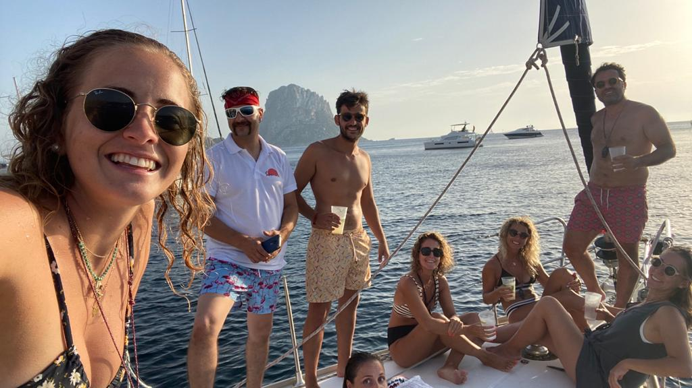
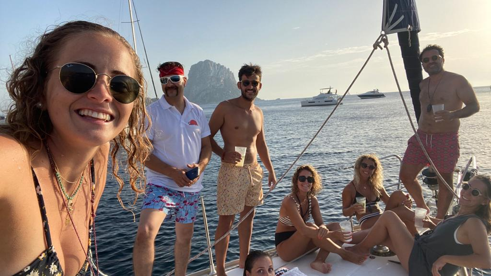
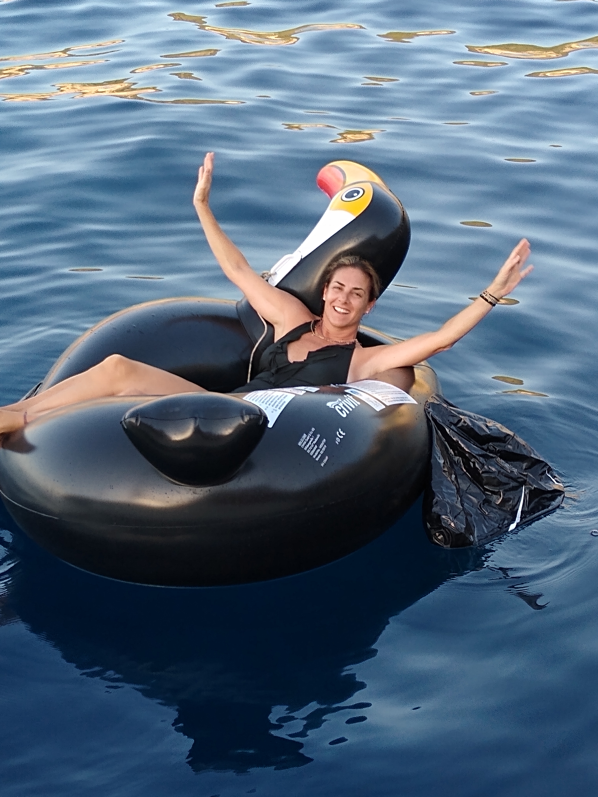
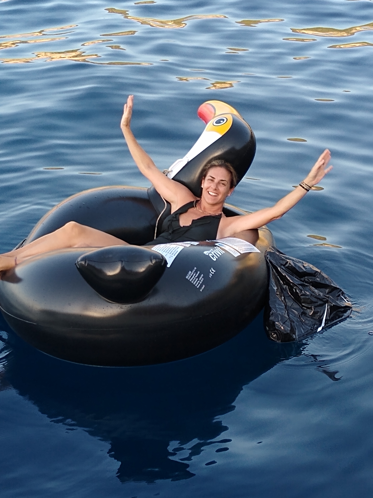
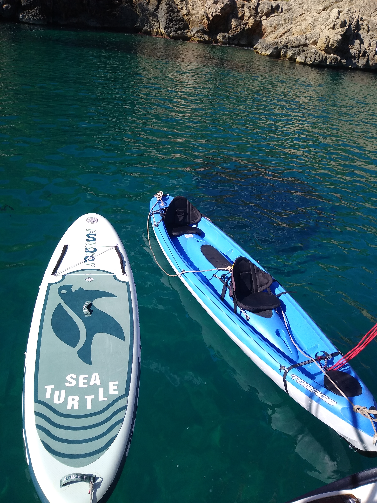
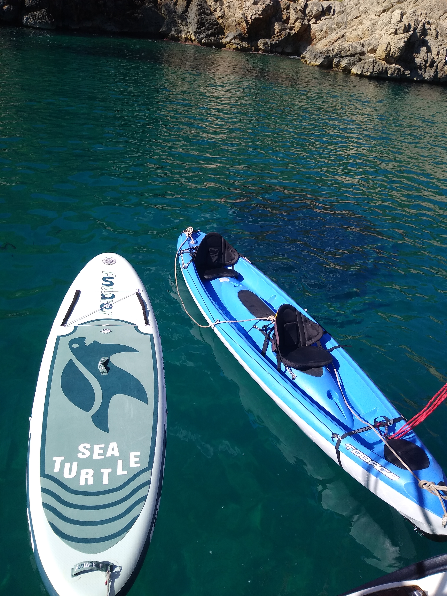

Ven a disfrutar la experiencia de realizar la travesía a vela entre la península y las islas de Pitiusas. Conoce las mejores calas donde ver y vivir atardeceres y amaneceres de ensueño, agua cristalina, abundancia de peces…A bordo de Sunrise, un barco de 43´´ muy confortable, con 3 camarotes dobles + del capitán, dos cuartos de baño, amplio salón, cocina con horno, nevera,…kayak, padle surf y solárium a disposición, y toda clase de detalles para disfrutar una estancia fabulosa e inolvidable.
La aventura comienza el viernes con toma de contacto en el barco entorno de las 16´30h de la tarde en la Marina Valencia Mar. Después de un pequeño briefing, consejos y conocer la tripulación, se acude a al supermercado más cercano para que entre los huéspedes hagan la compra según gustos.
Al regresar al barco se organizaran y se asignaran los camarotes, se pondrá rumbo a Ibiza o Formentera. Lo normal a esas horas es tener buena previsión con vientos favorables nos hagan gozar de una estupenda navegación. Tras la cena, se puede acudir a los camarotes o quedarse a disfrutar la noche y la navegación nocturna. La arribada a Ibiza o Formentera esta prevista entre las 8 -10h de la mañana coincidiendo con el despertar y desayuno de la mayoría…
Los siguientes días serán a elección de los huéspedes, pudiendo elegir fondear de cala en cala para bañarse, tomar sol, hacer shorkel, padle surf…visitar Formentera, baños de barro en la isla de S´Espalmador, etc…Las opciones son amplias y el plan se puede ir modificando a gusto y deseos de los huéspedes, siempre con la aprobación del capitán. Llegados a la madrugada del miércoles se dispondrá al zarpe de vuelta hacia Valencia, siempre teniendo en cuenta la meteorología, con hora prevista de llegada entorno de las 19-20h.


 


 



 
